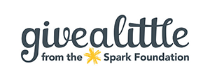

How to help WRR
Donations:
It costs us $200 to desex a female rabbit, $140 to desex a male and $25 to vaccinate each rabbit. This does not include any extra veterinary treatment that may be required for sick or injured rabbits in our care.
To help with the cost of caring for rabbits we desperately need monetary donations. If you are able to help then you can donate in the following ways:
Sponsor A Bun:
Most rabbits are with us for 2 + months. For example: Tulip and Athos have been with us since October 2015!!
On average - taking into consideration the difference in price between a neuter and a spey, and the different lengths of time each rabbit is with us - the overall cost per rabbit is $320. This does not include extra costs for sick or injured rabbits.
You can “Sponsor a Bun” by contacting us either via our Facebook page, or emailing wellingtonrabbitrescue@gmail.com
How much does it cost to care for each rabbit per week?
- $5 (food)
- $10 (food and bedding)
- $15 (food, bedding and litter)
- $9 (bag of litter) ref: wood
- $17 (bale of hay) ref: hay
- $20 (sack of rabbit pellets) ref: food
- $25 (vaccination for one rabbit) ref: vax
- $80 (check up/vet care) ref: vet
- $200 (desex + vax) ref: care
Fostering:
We also rely heavily on foster homes for our rabbits. Sometimes it can take a long time to find a forever home - so while they wait it's nice for them to have a “temporary” home and a family to love them.
What does fostering entail? There are a few different types of fostering:
Overflow/when the shelter is full. You will care for a desexed and vaccinated WRR bunny as if he/she were your own! The foster rabbit will need to come back to the shelter on adoption days.
Sick/injured. You will need an indoor set up for this type of fostering. One of the team will show you how to care and medicate your foster rabbit. Once the rabbit is healthy and ready for desex/vaccination/rehome they can come back to the shelter.
Entire/awaiting desex. You can only foster entire rabbits if all of yours are currently desexed. Your foster rabbit would remain in your care until he/she can be booked in for desex and vaccination with our vet.
If you would like to foster through Wellington Rabbit Rescue you will need to have your own set-up unless otherwise organized. This will need to meet the adoption requirements - 2 metres long, 1 metre wide and 1 metre high. The bigger the space the better!
The first step is to get photos of your set up through to us. You can send them via message or email: wellingtonrabbitrescue@gmail.com
Then we will send you through a foster application form.
We can't always supply you with hay and pellets so you will need to let us know in advance if you require either -- It will depend on how much we have in stock.
Give A little:
Bank Details
Wellington Rabbit Rescue
12-3143-0359794-00
We also accept donations of:
- Hay
- Pellets
- Newspaper
- Playpens
- Wood Shavings
Want to support WRR and look good too? Check out our “redbubble” store: